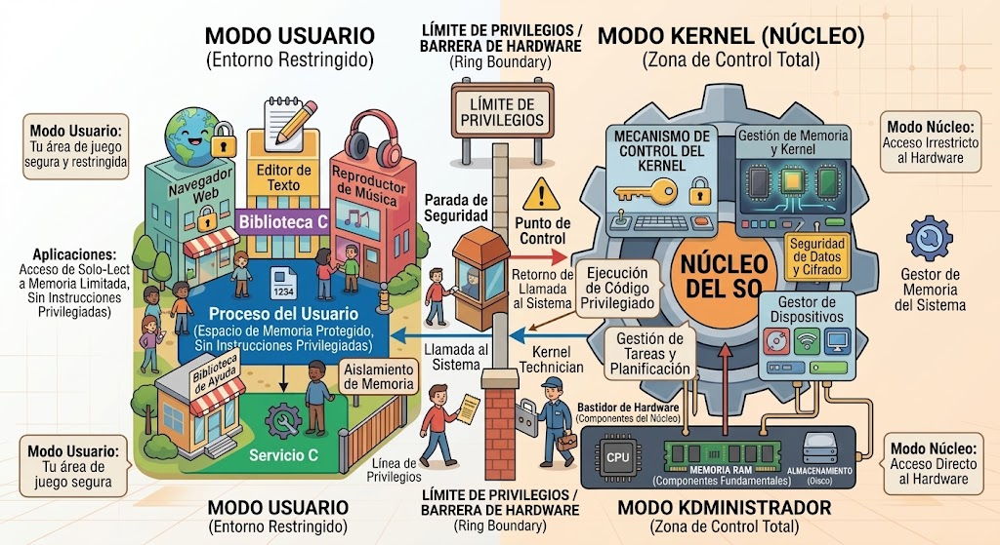
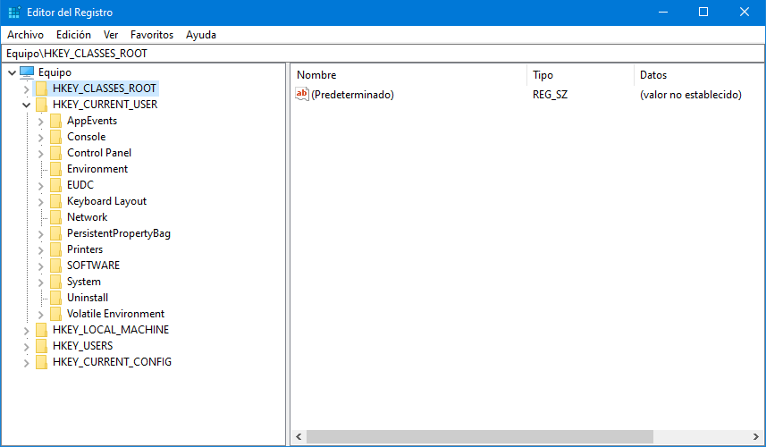
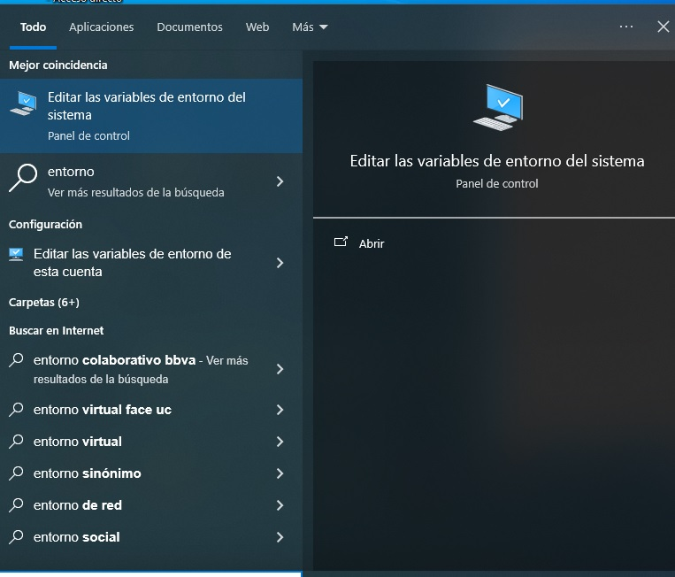

1. Arquitectura Base del Núcleo Windows NT
Windows 10 y 11 están construidos sobre la arquitectura de núcleo Windows NT. Operan bajo un modelo híbrido que divide la ejecución en dos modos de privilegio principales:
1.1 Modo Usuario (User Mode) y Modo Núcleo (Kernel Mode)
- Modo Usuario: Espacio de memoria restringido donde se ejecutan las aplicaciones finales y la interfaz gráfica. No tienen acceso directo al hardware.
- Modo Núcleo: Espacio con privilegios totales donde opera el Kernel
(
ntoskrnl.exe), los controladores de dispositivos (drivers) y la abstracción de hardware (HAL).

Figura 1.1: Diagrama de separación de privilegios entre Modo Usuario y Modo Núcleo (Haz clic para ampliar)
2. El Registro de Windows y Editor Regedit
El Registro de Windows es una base de datos jerárquica centralizada donde el sistema operativo guarda la configuración del hardware, controladores, programas instalados y preferencias de usuario.
2.1 ¿Qué es Regedit?
Regedit (regedit.exe) es la herramienta oficial de interfaz gráfica de
Windows diseñada para inspeccionar, modificar, exportar y restaurar las claves y valores almacenados
en la base de datos del Registro.
2.2 Estructura de Claves Raíz (HKEYs)
HKEY_CLASSES_ROOT (HKCR):Guarda asociaciones de archivos (extensión-aplicación) y registros COM/ActiveX.HKEY_CURRENT_USER (HKCU):Almacena la configuración y preferencias del usuario con la sesión activa.HKEY_LOCAL_MACHINE (HKLM):Contiene los ajustes globales del equipo aplicables a todos los usuarios..HKEY_USERS (HKU):Aloja los perfiles de todos los usuarios registrados en el sistema.HKEY_CURRENT_CONFIG (HKCC):Información temporal sobre el perfil de hardware activo detectado en el arranque.

Figura 2.1: Estructura de colmenas del Registro en regedit.exe (Haz clic para ampliar)
3. Sistemas de Archivos y Particiones en Windows 10 y 11
En Windows conviene distinguir dos conceptos: el sistema de archivos organiza los datos dentro de un volumen, mientras que el esquema o estilo de particionado define cómo se distribuyen las particiones en el disco.
3.1 Sistemas de archivos
- NTFS (New Technology File System): Es el sistema de archivos principal de Windows 10 y 11 para el volumen donde se instala el sistema. Soporta permisos mediante ACL, journaling, compresión, cuotas y cifrado EFS.
- exFAT: Adecuado para memorias USB, tarjetas SD y discos externos cuando se necesita compatibilidad entre Windows y otros sistemas. No ofrece el mismo conjunto de permisos y características de seguridad que NTFS.
- FAT32: Muy compatible con distintos equipos y dispositivos, pero tiene una limitación importante: no permite archivos individuales de más de 4 GiB. Windows suele utilizar FAT32 en la partición de sistema EFI (ESP) en equipos UEFI.
- ReFS (Resilient File System): Diseñado para escenarios que requieren alta resiliencia y grandes volúmenes de datos. Su disponibilidad depende de la edición y versión de Windows; no debe confundirse con el sistema de archivos habitual de arranque de Windows 10/11.
Figura 3.1: Propiedades de volúmenes de disco y asignación de NTFS (Haz clic para ampliar)
3.2 Estilos de particionado: GPT y MBR
- GPT (GUID Partition Table): Es el esquema recomendado para instalaciones modernas de Windows 10 y 11 con firmware UEFI. Permite numerosos discos y particiones de gran tamaño y mantiene copias redundantes de la información de particionado.
- MBR (Master Boot Record): Es un esquema heredado, asociado normalmente con firmware BIOS/Legacy. Tiene limitaciones frente a GPT, entre ellas el uso tradicional de hasta 2 TB por disco y cuatro particiones primarias.
3.3 Particiones habituales de una instalación UEFI de Windows 10/11
- EFI System Partition (ESP): normalmente FAT32; contiene los archivos necesarios para el arranque mediante UEFI.
- Microsoft Reserved (MSR): pequeña partición reservada por Windows en discos GPT para tareas internas de administración de particiones.
- Partición principal de Windows: normalmente NTFS; contiene
Windows,Program Files, perfiles de usuario y el resto de los datos del sistema. - Partición de recuperación: contiene herramientas del entorno de recuperación de Windows (WinRE), cuando el equipo la utiliza.
3.4 Ejemplo conceptual del disco
Disco GPT (UEFI)
┌────────────┬──────┬──────────────────────────┬──────────────┐
│ EFI / FAT32│ MSR │ Windows / NTFS │ Recuperación │
│ arranque │ │ C:\ │ / WinRE │
└────────────┴──────┴──────────────────────────┴──────────────┘
Sistema de archivos ≠ partición:
NTFS / FAT32 / exFAT / ReFS → organizan datos dentro de un volumen
GPT / MBR → describen cómo se particiona el disco3.5 Herramientas de Windows para consultar discos
- Administración de discos:
diskmgmt.mscpermite visualizar discos, volúmenes, particiones, letras de unidad y sistemas de archivos. - DiskPart: herramienta de consola para consultar y administrar discos y particiones. Debe utilizarse con cuidado porque algunas operaciones pueden eliminar datos.
- PowerShell: los cmdlets
Get-Disk,Get-PartitionyGet-Volumepermiten consultar la estructura de almacenamiento.
:: Consultar discos y particiones
C:\> diskpart
DISKPART> list disk
DISKPART> list partition
:: PowerShell
PS C:\> Get-Disk
PS C:\> Get-Partition
PS C:\> Get-Volume
Figura 3.2: Sistemas de archivos, GPT/MBR y particiones habituales en Windows 10/11 (Haz clic para ampliar)
4. Variables de Entorno en Windows
Una variable de entorno es un valor dinámico guardado en el sistema operativo que contiene información sobre el entorno de ejecución. Su principal ventaja es la portabilidad entre distintos equipos.
4.1 Sintaxis según la Consola
- CMD: Se delimitan entre signos de porcentaje (ej.
%variable%). - PowerShell: Se acceden usando el proveedor de entorno (ej.
$env:variable).
4.2 Principales Variables Nativas
%systemroot%/$env:SystemRoot: Directorio de instalación de Windows (C:\Windows).%programfiles%/$env:ProgramFiles: Carpeta de aplicaciones de 64 bits.%userprofile%/$env:USERPROFILE: Ruta personal del usuario activo.%temp%/$env:TEMP: Ubicación de archivos temporales.%PATH%/$env:PATH: Rutas para búsqueda ejecutiva de comandos.
:: Consultar el valor de una variable en CMD
C:\> echo %systemroot%
C:\Windows
# Consultar el valor de una variable en PowerShell
PS C:\> $env:SystemRoot
C:\Windows
Figura 4.1: Panel de gestión gráfica de Variables de Entorno (Haz clic para ampliar)
5. Administración de Procesos y Servicios
5.1 Conceptos de Ejecución
- Proceso: Instancia de un programa con memoria virtual privada.
- Hilo (Thread): Unidad básica de ejecución dentro de un proceso.
- Servicio: Proceso background controlado por el SCM sin requerir inicio de sesión.
5.2 Controladores y Herramientas CLI
:: Listar procesos activos con PID
C:\> tasklist
:: Finalizar un proceso forzadamente por nombre
C:\> taskkill /IM nombre_proceso.exe /F
:: Finalizar un proceso por su Identificador (PID)
C:\> taskkill /PID 4096 /FFigura 5.1: Administración de procesos interactiva y por CLI (Haz clic para ampliar)
6. Práctica de Diagnóstico: Restablecimiento de la Cola de Impresión
El servicio Print Spooler (spoolsv.exe) almacena temporalmente los
trabajos de impresión en la memoria intermedia antes de transmitirlos.
Paso 1: Detención del Servicio
Accede a la consola de servicios (services.msc) y detén Cola de
impresión.
Paso 2: Depuración de Archivos Temporales
Elimina los archivos alojados en C:\Windows\System32\spool\PRINTERS.
Paso 3: Reinicio del Servicio
Vuelve a iniciar el servicio para restablecer el flujo de impresión.
Resolución automatizada desde CMD (usando %systemroot%):
C:\> net stop spooler
C:\> del /Q /F /S "%systemroot%\System32\Spool\PRINTERS\*.*"
C:\> net start spoolerEquivalente en PowerShell (usando $env:SystemRoot):
PS C:\> Stop-Service -Name "Spooler" -Force
PS C:\> Remove-Item -Path "$env:SystemRoot\System32\Spool\PRINTERS\*" -Force -Recurse
PS C:\> Start-Service -Name "Spooler"Figura 6.1: Consola de servicios (services.msc) ajustando la Cola de Impresión (Haz clic para ampliar)